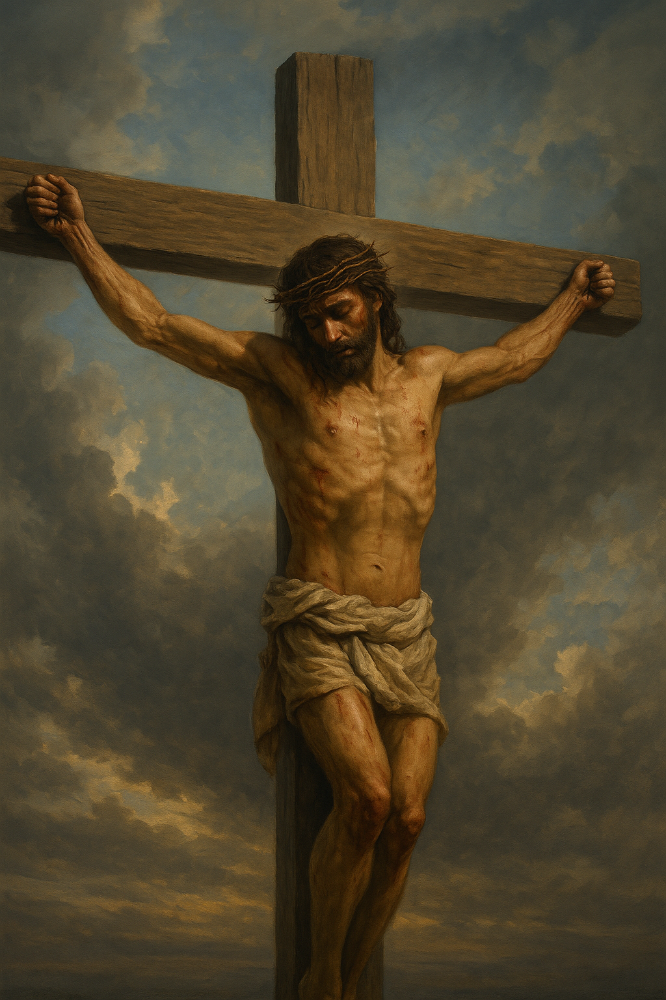

神のひとり子としてこの世に来られ、
すべての人の罪を贖うために
十字架にかかって死なれました。
イエスは愛と真理に満ちており、
病を癒し、悩める人々を慰め、
貧しい者と共に歩まれました。
イエスはこう言われました。
「わたしは道であり、真理であり、いのちである。
わたしを通してでなければ、
だれも父のみもとに行くことはできない」
（ヨハネの福音書14章6節）。
この言葉の通り、イエスは私たちを
神のもとへ導く唯一の道であり、
私たちに永遠の命を与えるお方です。

「神は、そのひとり子をお与えに
なったほどに、世を愛された。
それは御子を信じる者が、ひとりとして
滅びることなく、永遠の命を持つためである」
（ヨハネの福音書3章16節）。
この御言葉からもわかるように、イエスの
十字架の死は私たちへの究極の愛の証です。
しかし、
イエスは死んで終わったのではありません。
3日目に死からよみがえり、今も生きておられます。
この復活の力こそが、私たちの希望であり、
信仰の中心です。
イエス・キリストを信じることで、
罪の赦しと新しい人生、そして神との
永遠の関係が与えられます。
このイエスと共に歩んでみませんか。